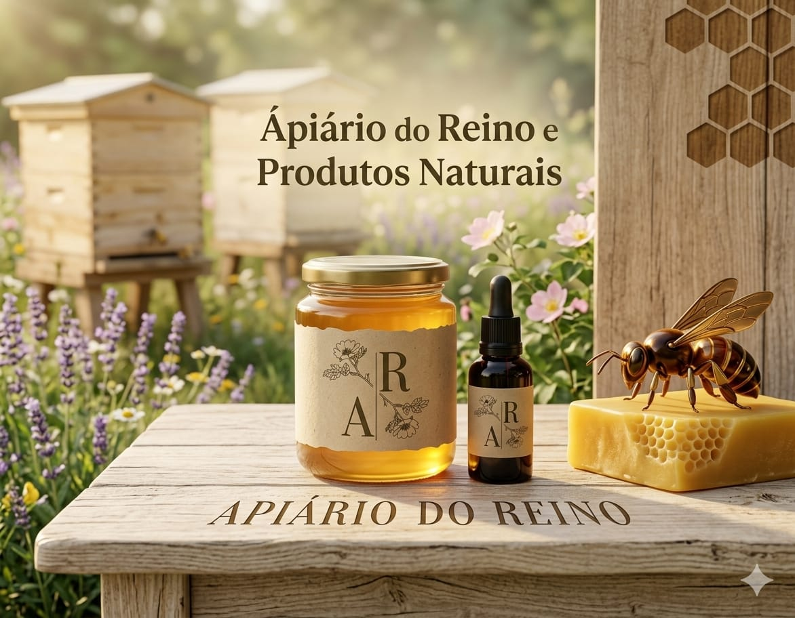

Conheça nossa história, missão, visão e valores

O Ápiario do Reino surgiu a partir de uma paixão que começou na infância. Quando eu tinha apenas 12 anos, tive a oportunidade de ajudar meu tio em seu apiário. Essa experiência despertou em mim uma fascinação pelo mundo das abelhas, que acompanhou meu crescimento ao longo dos anos.
Gradualmente, continuei a auxiliá-lo nas diversas atividades relacionadas à apicultura, desenvolvendo um profundo interesse por esses insetos extraordinários. A virada decisiva para a formação da nossa empresa ocorreu quando assisti a um vídeo do TNA Nunes no YouTube. Nele, o especialista compartilhava seu extenso conhecimento sobre abelhas de maneira acessível e inspiradora.
Foi nesse momento que percebi que este era o caminho que eu queria seguir. Motivado por sua abordagem e pela paixão que ele transmitia, comecei a explorar mais sobre o tema, assistindo a vídeos e buscando cursos na área.
À medida que me aprofundava no universo das abelhas, fui me encantando com sua importância vital para a humanidade e o planeta. Hoje, compreendo que esses polinizadores desempenham um papel essencial em nosso ecossistema, contribuindo não apenas para a produção de alimentos, mas também para a saúde e o bem-estar de todos nós.
Com essa compreensão, fundei o Apiário do Reino com o compromisso de preservar, cuidar e valorizar as abelhas. O nome da empresa reflete nossa crença de que Deus criou esses seres para nosso benefício, atribuindo-lhes a responsabilidade de polinizar nosso planeta, uma função crucial para a sobrevivência da vida como a conhecemos.
Agradecemos a elas e reconhecemos os benefícios que oferecem, como o mel — um produto com propriedades medicinais — além do pólen, própolis e geleia real. A cera das abelhas, por sua vez, tornou-se um recurso valioso e procurado no mercado. Além de seus produtos, as abelhas possuem aplicações na medicina, demonstrando seu valor inestimável.
Nossa missão no Apiário do Reino é compartilhar esse conhecimento com o mundo, educando as pessoas sobre a importância das abelhas e promovendo práticas que garantam sua preservação. Hoje, continuamos a trabalhar com essas criaturas incríveis, dedicando-nos a viver da apicultura e a valorizar sempre seu papel essencial no equilíbrio da natureza e na vida humana.
Acreditamos que, ao cuidar das abelhas, estamos cuidando do futuro do nosso planeta.
A missão do Ápiario do Reino é preservar e valorizar as abelhas, promovendo a educação da comunidade sobre sua importância vital para o ecossistema. Comprometemo-nos a implementar práticas sustentáveis que assegurem a proteção dessas espécies, ao mesmo tempo em que compartilhamos conhecimento sobre os produtos apícolas, como mel, pólen, própolis e geleia real, destacando seus benefícios para a saúde e o bem-estar da população.
Aspiramos ser reconhecidos como líderes em apicultura sustentável, inspirando indivíduos e comunidades a valorizar e proteger as abelhas, considerados elementos essenciais para a vida no planeta. Buscamos expandir nosso alcance educacional e promover a conscientização acerca da importância da polinização e do equilíbrio ecológico, contribuindo para um futuro mais saudável e sustentável.
Compromisso inabalável com práticas que respeitam e preservam tanto o meio ambiente quanto as abelhas.
Promoção do conhecimento e conscientização sobre a importância das abelhas para a biodiversidade e a saúde humana.
Reconhecimento da nossa responsabilidade em proteger e cuidar das abelhas, que desempenham um papel crucial no equilíbrio da natureza.
Dedicação à excelência na produção de produtos apícolas, assegurando que nossos consumidores desfrutem de produtos saudáveis e de alta qualidade.
Estímulo à interação e ao envolvimento da comunidade em iniciativas que promovam a preservação das abelhas e do ecossistema, fortalecendo laços sociais e ambientais.
Conheça nossos produtos e ajude a preservar o importante trabalho das abelhas.